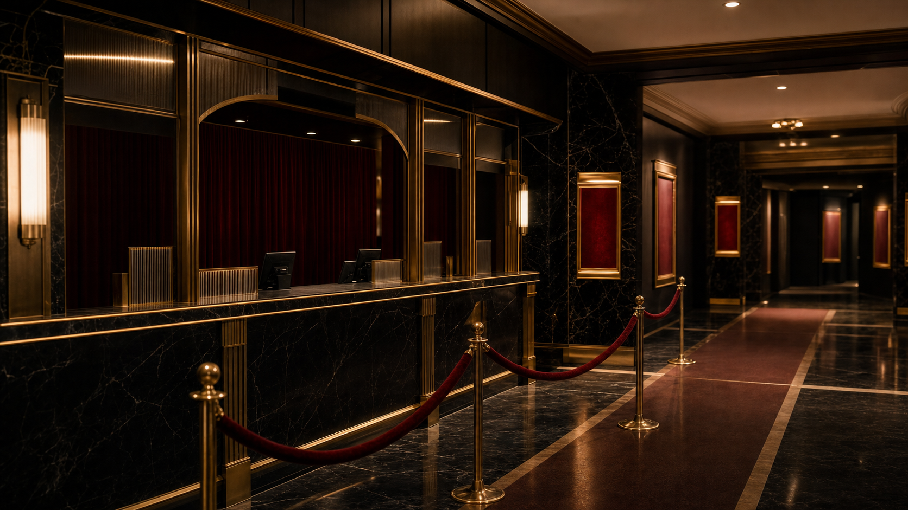

受付ロビー
チケット控え、上映掲示、問い合わせ窓口を集約しています。

LOBBY AND SEATS
受付ロビー、客席、通路、非常口のご案内です。古い劇場設備を保全しながら、上映ごとの安全確認を行っています。
FACILITY MAP
チケット控え、上映掲示、問い合わせ窓口を集約しています。
一スクリーン制です。上映中は後方通路の移動を制限します。
非常灯と通路灯は上映前後に点灯確認を行います。
自由席です。車椅子利用の方は受付でお声がけください。
上映15分前から混み合います。掲示板で整理券番号をご確認ください。
古い建物のため段差があります。足元灯と誘導表示をご利用ください。